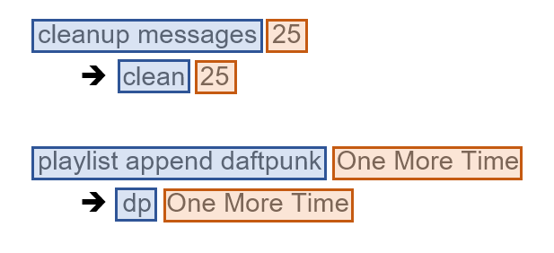

Alias
This is the cog guide for the alias cog. You will find detailed docs about the usage and the commands.
[p] is considered as your prefix.
Note
To use this cog, load it by typing this:
[p]load alias
Usage
This cog is used to create shortcuts for commands.
Here’s an example:
[p]play
# with an alias, you can call the command above with a shortcut like this:
[p]p
# "p" is now a shortcut for "play"
In this example, we made an alias named p that will
invoke the play command. If you use [p]play or [p]p, the result will
be the same.
Here’s another example
[p]cleanup messages
# now we're creating another alias that will group both the command and the subcommand into this:
[p]clear
# "clear" is now a shortcut for "cleanup messages"
In this second example, we made an alias called clear that will
invoke the cleanup messages subcommand. Now if you use [p]cleanup
message or [p]clear, the result will be the same.
This is the basic usage, where you can define an alias for the first part of the command and give the second part when invoking the command. A more advanced usage of aliases is the usage of arguments.
Let’s suppose you want to make an alias to ban someone, delete 7 days of
messages and set the reason to “Spam bot.”, that cannot be done with a classic
alias since the required member argument is the first one. If you create the
alias “spamban” using arguments like this ban {0} 7 Spam bot., {0} will
be replaced by the first argument of your alias:
# we created the following alias named "spamban"
[p]spamban Slime#3160
# this alias will execute the following command:
[p]ban Slime#3160 7 Spam bot.
For a more detailed explanation, read this.
Commands
alias
Syntax
[p]alias
Description
This is the main command used for setting up the cog. It will be used for all other commands.
alias add
Note
This command is locked to the mod role.
Syntax
[p]alias add <alias_name> <command>
Description
Creates an alias. It will be used like this [p]alias_name <arguments>
and will be equal to this [p]command <arguments>.
Let’s develop the examples given earlier a bit more, the left part of the command is the alias (blue), and the right part is the parameters members have to give for the command (orange).
One more thing you can do with aliases is using arguments, a bit like CustomCommands. Let’s suppose you want an alias that bans x member and deletes 7 days of messages. Without aliases, the command would look like this:
[p]ban NotSoTrustyJAID#0001 7 My random reason
A classic alias wouldn’t work because the member argument is the first one, and you can only shorten the left part before the required argument.
An alias with arguments can fix that, you can define the alias on the whole
command and replace the required argument by {0}, which will be replaced
by the first parameter given when invoking the alias.
Back to our example, let’s make an alias named bigban which will be
assigned to this expression: ban {0} 7
You can see in blue the “static” part of the alias, what is contained and doesn’t need to be given, the orange part is the arguments given at the end of the command, just like a classic alias, and the green part is the positional argument we defined: the first argument of the alias will be the green part.
You can add as many arguments as you want, they can start at {0} or {1}
and must be in order: {1} will be the first argument, {2} will be the
second one…
Attention
The numbers must be in order, you cannot use {0} and {2}
without using {1}.
Here are more examples:
Full command:
[p]cleanup messages 75 TrueAlias:
[p]alias add fullclear cleanup messages {0} TrueInvoked alias:
[p]fullclear 75
The
Trueat the end tells the bot to also clear pinned messages.Full command:
[p]repo add SinbadCogs https://github.com/mikeshardmind/SinbadCogs v3Alias:
[p]alias add newrepo repo add {2} https://github.com/{1}/{2}Invoked with alias:
[p]newrepo mikeshardmind SinbadCogs v3
Arguments
<alias_name>: The new command name.<command>: The command to execute when[p]alias_nameis invoked.
alias delete
Note
This command is locked to the mod role.
Syntax
[p]alias [delete|remove|del] <alias_name>
Description
Removes an alias from the list. Check the list with the alias list command.
Arguments
<alias_name>: The alias’ name to delete.
alias list
Syntax
[p]alias list
Description
Shows all of the existing aliases on the current server.
alias show
Syntax
[p]alias show <alias_name>
Description
Shows the command associated to the alias.
Arguments
<alias_name>: The alias you want information from.
alias help
Syntax
[p]alias help <alias_name>
Description
Shows help message for an alias.
Arguments
<alias_name>: Alias you want to get help from.
alias global
Note
This command is locked to the bot owner.
Syntax
[p]alias global
Description
Another group command which contains the add, del and list commands.
They work the same, except the created aliases will be global instead of being only server-wide.
Please refer to these docs for the commands, they work with the
same arguments. For example, if you want to add a global alias,
instead of doing [p]alias add <arguments>, do [p]alias
global add <arguments>.